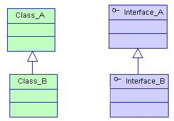
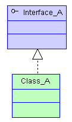
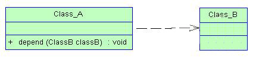
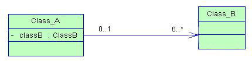

精简版UML
2016-04-26 演讲者：何通庆
2016-04-26 演讲者：何通庆
| 泛化关系 | 实现关系 |
|---|---|
|  |  |
| 依赖关系(或称使用关系) | 关联关系 |
|---|---|
| 单向 | 一般是平等的,单箭头表示单向，双箭头或无箭头表示双向 |
| 偶然性、临时性、非常弱的 | 非临时的，非偶然的，强依赖关系 |
| 体现在局部变量，方法中的参数，静态方法的调用 | 成员变量或关联类A引用被关联类B的全局变量 |
|  |  |
| 每个端点有一个基数表示关联的类可以有几个实例 |
| 4+1视图 | UML |
|---|---|
| 场景视图 | 用例图 |
| 逻辑视图 | 类图 |
| 开发视图 | 类图、组件图 |
| 进程视图 | 无完全对应 |
| 物理视图 | 部署图 |